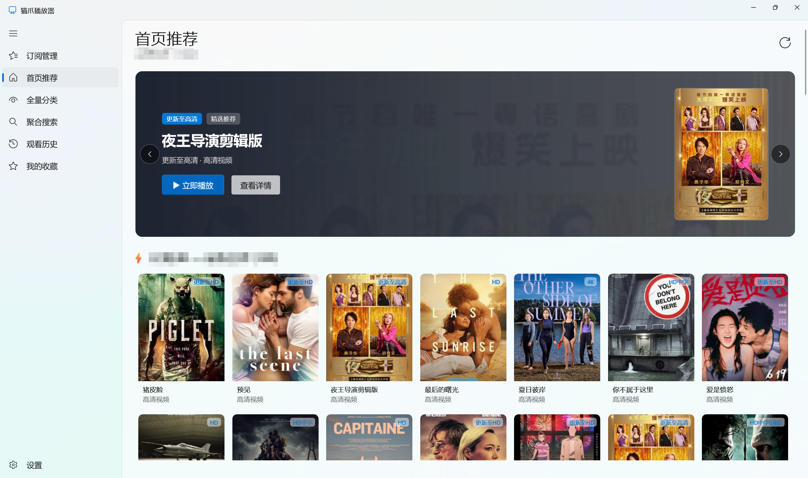

基于微软原生 WinUI 3 与深度优化的 Yaozhi-MPV 高性能渲染引擎打造。零内置广告、毫秒级拖拽秒播，原生支持 TVBox/猫源多仓聚合订阅与网盘 4K 原画直解，还观影以纯净与流畅。
原生现代化 Fluent 视界
精心雕琢的 Windows 11 原生设计，顶部居中导航、紧凑工具栏与全景海报流，打造如丝般顺滑的大屏观影享受。

为什么选择 AinanPlayer？
从底层渲染引擎到上层交互体验，拒绝套壳浏览器卡顿，带来真正专业的 Windows 流媒体播放方案。
基于 Windows App SDK 1.6 与 Fluent 2 设计构建。支持云母（Mica）磨砂半透明质感，深浅色主题无缝切换，更有 4 款品牌质感图标实时热切换。
深度集成 Yaozhil/mpv 渲染核心。内置便携版开箱即用 4K 60FPS / 杜比视界；外置模式支持自由加载 Anime4K 等着色器与专属配置，极客首选。
完美兼容 TVBox/猫源多协议订阅接口与加密爬虫。内置原生扫码授权控制台，直接无缝直解夸克、阿里、百度、115 等网盘 4K 原画资源。
底层 I/O 深度裁剪优化，剥离千项无用碎片，秒级安装解压。零常驻后台、零内置广告，通过 Defender 绿灯通道，纯粹安心。
获取 AinanPlayer 安装包与便携版
面向大众用户免费提供 正式稳定版 (v3.5.0)；最新内测版 (v3.9.9) 包含前沿重构特性，需要捐赠支持才可下载使用。
具备现代化安装向导，自动配置快捷方式，经过近千名用户实机测试，日常观影最为稳定可靠。
解压即可直接运行，无任何安装流程，历史记录与配置文件均保存在当前目录，适合 U 盘携带。
包含最新研发成果：观看历史智能去重合并与单条删除、播放器连续切集秒播防断流、全量分类无限瀑布流、长剧快捷分集等。内测版本需捐赠支持本项目后才可获取下载使用。
免安装便携绿色版本，采用专属 Deflate-5 优化算法，内置完整 .NET 8 独立运行时，SSD 秒级解压，即解即用。内测版本需捐赠支持本项目后才可获取下载使用。
常见问题与说明